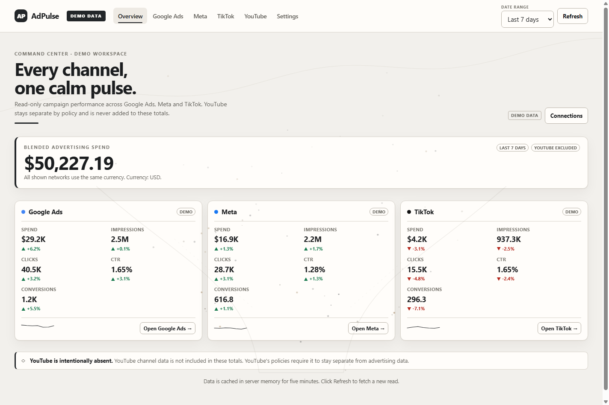
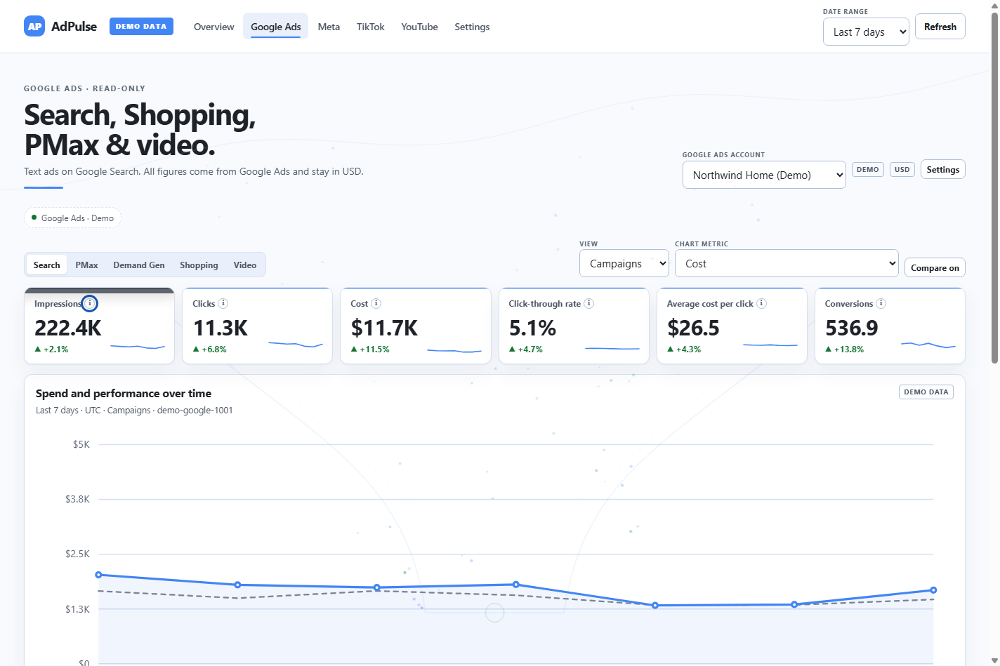
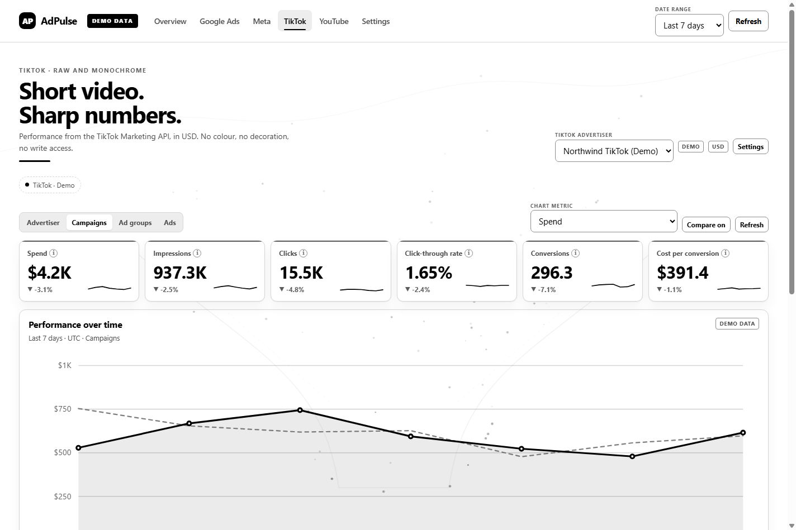
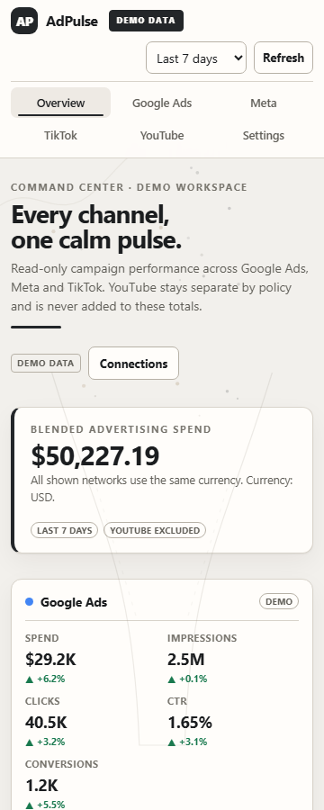

Search, Shopping, PMax, and video.
Runtime-verified field catalog, campaign through keyword detail, account currency, and correct micros/percent normalization.
- Eight report levels
- Live metric catalog filtering
- Conversion actions and budgets
AdPulse brings Google Ads, Meta, TikTok, and YouTube metrics into one focused dashboard — with no write access, no data mixing, and no secrets in the browser.
Static project site. Demo screenshots from the verified build.

Each network keeps its own theme, currency, and reporting model. The dashboard normalizes the metrics without flattening the details that matter.
Runtime-verified field catalog, campaign through keyword detail, account currency, and correct micros/percent normalization.
Campaign, ad set, and ad views with Insights metrics, campaign objects, placement breakdowns, and CSV export.
A monochrome workspace for advertiser, campaign, ad group, and ad reporting, with a clearly separated public Ad Library.
Channel and video analytics in a memory-only workspace. YouTube is excluded from Overview totals by construction and cannot be exported to CSV.
AdPulse does not rely on hiding buttons. Every outbound provider request is checked against an exact host, method, and path allowlist before it is sent.
Only read and explicitly approved report endpoints pass. Unknown hosts and paths are rejected locally.
AES-256-GCM encrypted settings, masked responses, no NEXT_PUBLIC_ secrets, and a built-asset secret scan.
Google micros are converted once. Blended totals are suppressed unless every connected network shares one currency.
YouTube data is memory-only, excluded from Overview, never exported, and removable through a revoke/delete flow.
Google Ads, TikTok, and a true 360 px mobile view from the verified build.



The full dashboard is a Node.js application. GitHub Pages hosts this static project page; it cannot run the server-side API, OAuth flows, or encrypted settings store.
Full setup instructions# install and configure
npm install
cp .env.example .env.local
# add APP_SECRET to .env.local
npm run dev
# open http://localhost:3000No invented metrics. Live provider response shapes remain marked unverified until tested against real accounts.
Requirements, quick start, configuration, and deployment notes.
API notesReviewed endpoints, scopes, normalization, limits, and the UNVERIFIED register.
VerificationRelease gate, security checks, browser states, and untested areas.
DecisionsWhy the UI is vanilla, how read-only is enforced, and why YouTube is isolated.
Google Ads, Meta, TikTok, and YouTube clients are implemented and policy-tested, but no live test credentials were available during this build. Real provider responses, permissions, API versions, and quota behavior remain unverified. The screenshots on this page are demo data and are labeled as such in the interface.